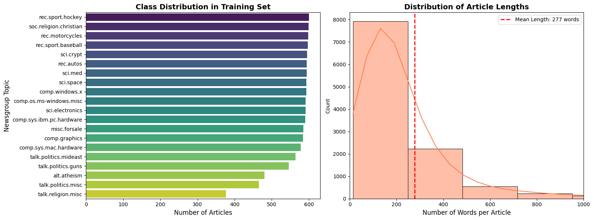
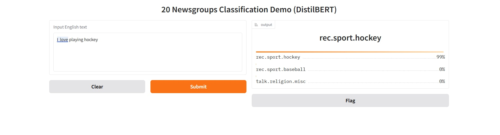

Text Track
RNN vs Transformer on 20 Newsgroups.
Evaluating Natural Language Processing (NLP) performance on the 20 Newsgroups dataset. Comparing sequential modeling (RNN) against Self-Attention (DistilBERT).
3AIPRO · Text
Text Classification Report (Assignment 1)
Text Track
Evaluating Natural Language Processing (NLP) performance on the 20 Newsgroups dataset. Comparing sequential modeling (RNN) against Self-Attention (DistilBERT).
Understanding the linguistic challenges and class distribution within the corpus.
Problem statement
The core objective is to read a raw English text document (such as an email or a forum post) and accurately classify it into exactly 1 of 20 distinct topics, ranging from comp.graphics to talk.politics.mideast. This serves as a fundamental benchmark in Text Classification.
Dataset Highlights
sklearn.datasets.fetch_20newsgroups.
Figure 1: Distribution of documents across the 20 topic classes in the 20 Newsgroups dataset.
talk.religion.misc).
Advanced data cleaning and distinct tokenization pipelines for RNN and DistilBERT via preprocess_text.py.
Unlike computer vision tasks where pixels have natural spatial relationships, unstructured text must be meticulously cleaned and converted into dense numerical sequences (Token IDs) before being fed into a Neural Network.
clean_text(text) function deploys Regular Expressions (Regex) to aggressively strip excess whitespaces, remove all non-alphanumeric punctuation ([^\w\s]), and strictly lowercase all characters to drastically reduce the sheer size of the vocabulary.Counter. Rare words appearing less than twice are discarded to filter out noise. Crucial special tokens <PAD> and <UNK> are forcibly injected into the mapping.AutoTokenizer (distilbert-base-uncased). It applies a highly sophisticated WordPiece subword tokenization, effectively handling Out-Of-Vocabulary (OOV) words by breaking them into familiar syllables.max_length=256 to form perfect rectangular matrices. Finally, they are batched for optimized GPU memory ingestion.def clean_text(text):
text = re.sub(r'\s+', ' ', text)
text = re.sub(r'[^\w\s]', '', text)
return text.strip().lower()
def load_and_clean_data():
print("Downloading and loading 20 Newsgroups dataset...")
train_data = fetch_20newsgroups(subset='train')
test_data = fetch_20newsgroups(subset='test')
df_train = pd.DataFrame({'text': [clean_text(t) for t in train_data.data], 'label': train_data.target})
df_test = pd.DataFrame({'text': [clean_text(t) for t in test_data.data], 'label': test_data.target})
return df_train, df_test, train_data.target_namesEstablishing a unified training loop in ulti_text.py to evaluate RNN and DistilBERT objectively.
Interactive Pipeline
Cleaned text is mapped to Integer IDs. Crucially, for Transformers, an attention_mask is also dynamically generated to instruct the model to explicitly ignore <PAD> tokens during attention weight calculation.
RNN (Bi-LSTM): Processes tokens sequentially from left-to-right (and vice versa), maintaining a hidden state. However, it severely struggles with the "vanishing gradient" problem on long documents.
DistilBERT: Computes all tokens concurrently using Multi-Head Self-Attention, deeply understanding the holistic, non-linear context of the entire document without distance penalties.
The model outputs a 20-dimensional tensor (logits). torch.argmax selects the topic index with the highest probability. CrossEntropyLoss is utilized to calculate the error and compute gradients for backpropagation.
with torch.no_grad():
for batch in tqdm(test_loader, desc=f"Epoch {epoch+1}/{epochs} [Eval]"):
if model_type == "RNN":
inputs, labels = batch
inputs, labels = inputs.to(device), labels.to(device)
outputs = model(inputs)
preds = torch.argmax(outputs, dim=1)
else:
input_ids = batch['input_ids'].to(device)
attention_mask = batch['attention_mask'].to(device)
labels = batch['label'].to(device)
outputs = model(input_ids=input_ids, attention_mask=attention_mask)
preds = torch.argmax(outputs.logits, dim=1)
all_preds.extend(preds.cpu().numpy())
all_labels.extend(labels.cpu().numpy())Comprehensive evaluation confirms the massive architectural superiority of the Transformer model in NLP tasks.
Quantitative Results
The results below are recorded at the final evaluation epoch on the official sklearn test split.
| Model | Accuracy | Macro F1 |
|---|---|---|
| RNN (Bi-LSTM) | 58.11% | 0.5844 |
| DistilBERT (Pretrained) | 83.70% | 0.8329 |
Key Discussion
The ~25.59% accuracy gap proves that DistilBERT's pretrained knowledge and Self-Attention mechanism are far more effective at capturing long-range dependencies and rare vocabulary than a Bi-LSTM trained from scratch.


Figure 2 & 3: Confusion Matrices for Bi-LSTM (left) and DistilBERT (right) on the 20 Newsgroups test set.
misc.forsale. This class achieved the highest recall (~78.5%) with 306 correct predictions out of 390 samples. The distinct and domain-specific vocabulary surrounding marketplace listings allowed the Bi-LSTM to capture sequential patterns effectively, minimizing confusion with other categories.comp.sys.ibm.pc.hardware. With only 164 correct predictions out of 392 samples (~41.8% recall), this class suffered heavily from confusion with semantically adjacent classes such as comp.windows.x (42 misclassified), comp.sys.mac.hardware (32), and comp.graphics (29). The sequential model struggled to distinguish between overlapping technical terminologies shared across computer-related newsgroups.rec.sport.hockey. Achieved near-perfect recall of ~97.5% with 389 correct predictions out of 399 samples. The transformer's deep contextual understanding allowed it to effortlessly identify highly specific sport-related keywords and entities unique to this domain, leaving minimal room for misclassification.talk.religion.misc. With only 135 correct predictions out of 251 samples (~53.8% recall), this class recorded the most significant confusion, particularly with alt.atheism (78 misclassified samples). The semantic overlap between general religious discourse and atheism-related discussions presents a fundamental challenge even for transformer-based models, as both topics frequently share similar argumentative language and contextual framing.

Figure 4 & 5: Loss and Accuracy training curves for the baseline RNN versus the DistilBERT transformer.
Integrating a live interactive Web User Interface (Gradio) to seamlessly interact with the NLP model.
Application Demo
Going significantly beyond static terminal printouts, an advanced Extension was successfully implemented by injecting the Gradio library directly into main_Transformer.ipynb. This sophisticated interface provides a real-world testing environment: users can type or paste any arbitrary English text snippet into the UI. DistilBERT dynamically tokenizes the input, computes the Softmax probabilities via an active GPU forward pass, and instantly visualizes the Top 3 most relevant topics using an elegant confidence bar chart.
import gradio as gr
import torch.nn.functional as F
model_trans.eval()
def predict_text(text):
if not text.strip(): return {"Please enter some text": 1.0}
inputs = tokenizer(text, return_tensors="pt", truncation=True, padding=True, max_length=256).to(device)
with torch.no_grad():
probs = F.softmax(model_trans(**inputs).logits, dim=1)[0]
top_probs, top_indices = torch.topk(probs, 3)
return {target_names[top_indices[i].item()]: top_probs[i].item() for i in range(3)}
demo = gr.Interface(
fn=predict_text,
inputs=gr.Textbox(lines=5, label="Input English text"),
outputs=gr.Label(num_top_classes=3),
title="20 Newsgroups Classification Demo (DistilBERT)"
)
demo.launch()
Figure 6: Screenshot of the Gradio web interface predicting user-inputted text in real-time.